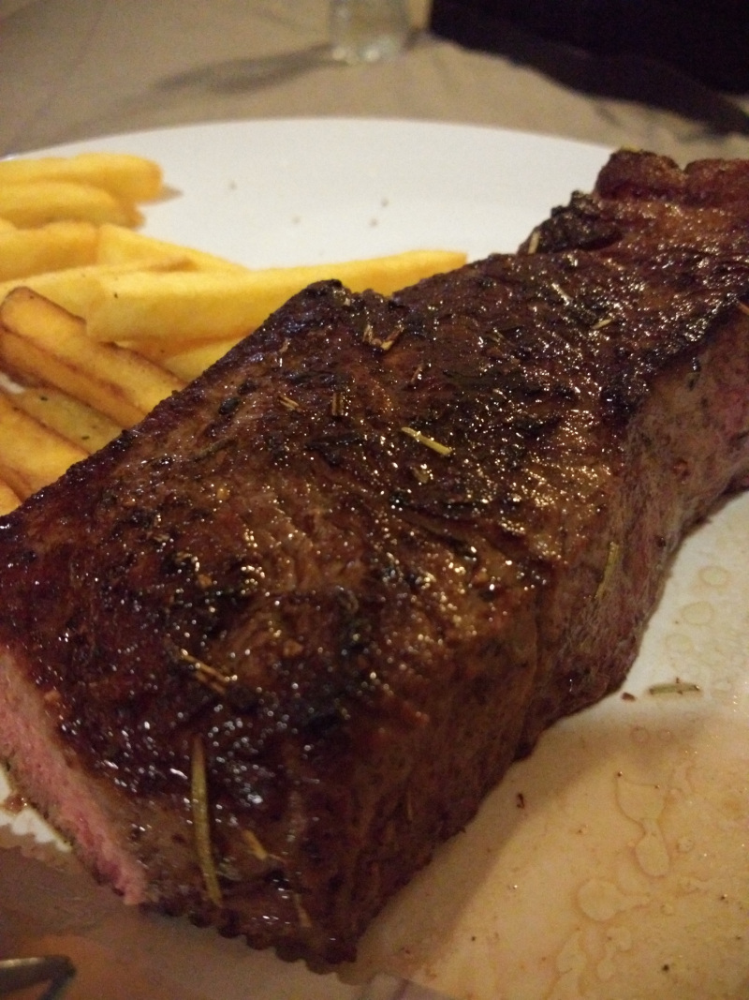

Best Steak of Your Life by Devon

Devon's classic and never-failing steak recipe
The first time Devon ever cooked a steak himself was 5 months into our dating life. He bought a giant rump steak from The Food Lover's Market and prepared it exactly according to instructions he had
spent ages researching on the internet that day. It was a whole process, and I had never seen him so focused before. That steak was the first of hundreds.
Devon has been perfecting his craft ever since that day, and now I am able to give you his unfailing, fool-proof steak recipe. You'll thank me later.
Ingredients:
- 1-1 1/2 inch thick steak of best quality you can afford (Good marbling is essential!)
- Avocado oil, or similar with high smoking point
- Coarse-ground salt
- Coarse-ground black pepper
Steps:
- Heat good quality pan to medium-high heat.
- Pat steak dry with paper towel.
- Liberally season steak with salt and pepper on both sides.
- Add 1-2 tbsp of oil to pan.
- Place steak carefully into pan. (Be careful of oil splashes!)
- Cook steak for 7 minutes, flipping every 2 minutes.
- Rest steak for 5 minutes.
- Enjoy a perfectly medium-rare steak!